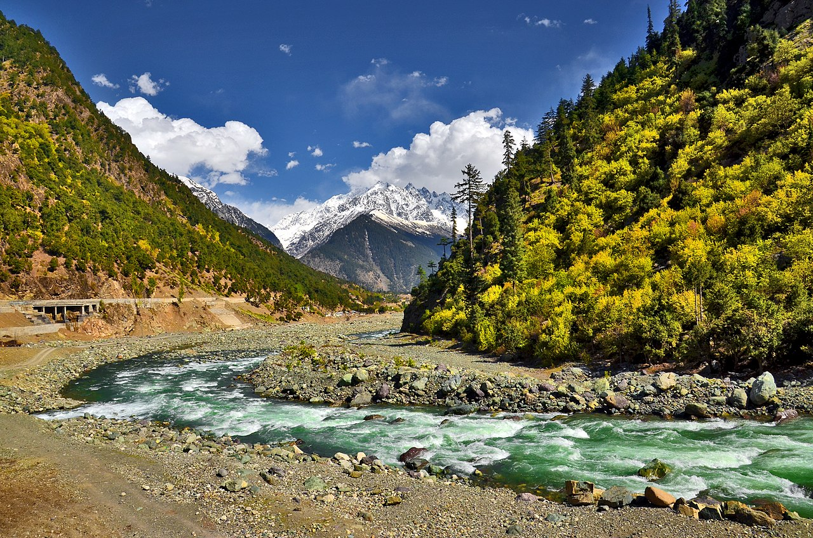
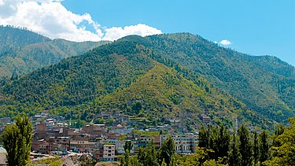

Atror

Kalaam
Kumrat Valley
Kundol Lake

Madyan Valley
Mahudand Lake
Malam Jabba
Miandam Valley
Swat District also known as the Swat Valley, is a district in the Malakand Division of Khyber Pakhtunkhwa, Pakistan. With a population of 2,309,570 per the 2017 national census, Swat is the 15th-largest district of Khyber Pakhtunkhwa with many popular tourist attractions.some of these images are following.
Swat District is centered on the Valley of Swat, usually referred to simply as Swat,
which is a natural geographic region surrounding the Swat River. The valley was a major
centre of early Buddhism of the ancient civilization of Gandhara, and was a major centre
of Gandharan Buddhism, with pockets of Buddhism persisting in the valley until the 17th
century, after which the area became largely Muslim. Swat was conquered by many
empires in its history. In 1849, after the fall of Sikhs to the British forces, Swat was
established as a Princely state under British suzerainty as part of the British Raj.
In 1947, following the Partition of British India and subsequent independence of Pakistan,
Swat acceded to the Dominion of Pakistan continuing as a self-governing princely state until
it was officially annexed and merged into West Pakistan and later became a part of
North-West Frontier Province (now Khyber Pakhtunkhwa) in 1969. The region was seized by the
Tehrik-i-Taliban in late-2007 until Pakistani control was re-established in mid-2009.
The average elevation of Swat is 980 m (3,220 ft),[5] resulting in a considerably cooler
and wetter climate compared to the rest of Pakistan. With lush forests, verdant alpine
meadows, and snow-capped mountains, Swat is one of the country's most popular tourist
destinations.

Atror
Kalaam

Kumrat Valley

Kundol Lake
Madyan Valley

Mahudand Lake

Malam Jabba

Miandam Valley